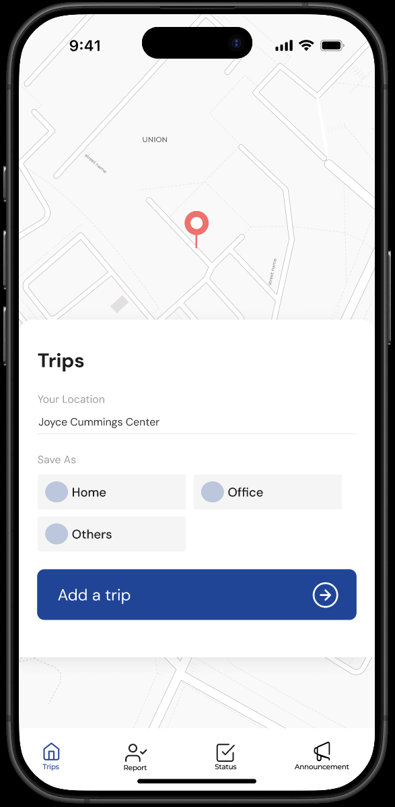
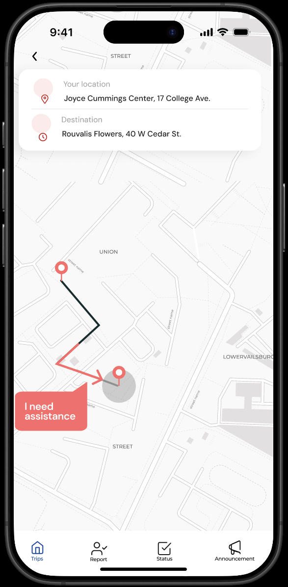
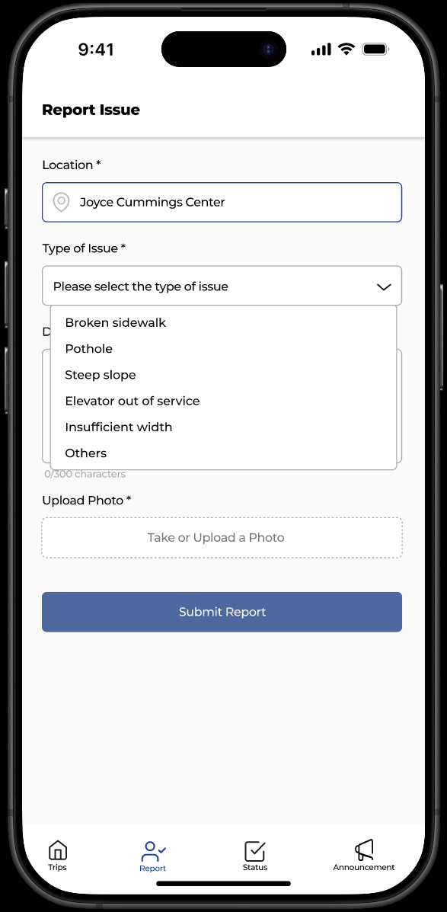
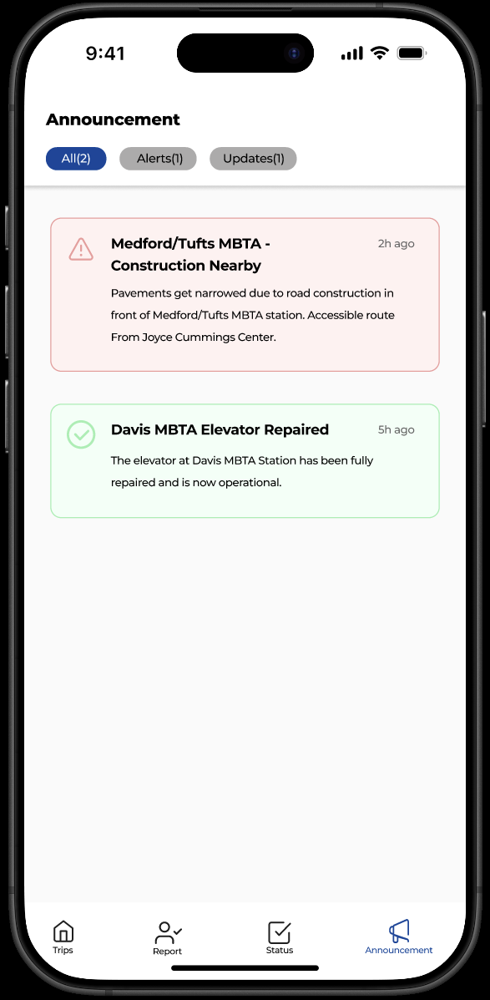
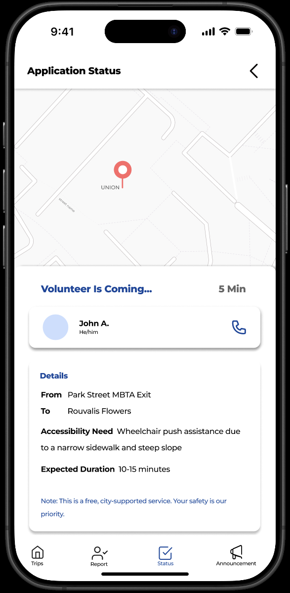
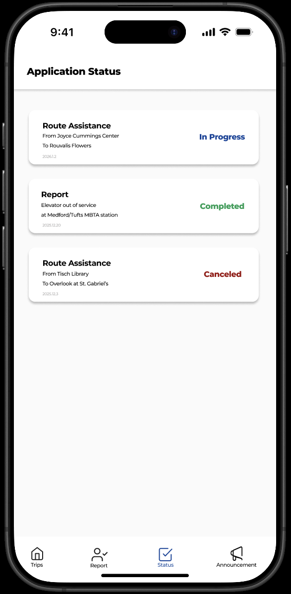

Wayable
Overview
Wayable is an accessibility-focused navigation concept created for the Tufts Derby Entrepreneurship Center 36-Hour Producthon under the Civic Transparency track.
Through interviews with people with mobility disabilities, we discovered that accessibility information often already exists—but is fragmented across government notices, maps, social media, and word of mouth, making it difficult to find when it is actually needed.
We translated that insight into a mid-fidelity concept centered on accessible route planning and real-time issue reporting.
The Problem
People with mobility disabilities cannot always tell whether a route is accessible at the moment they need to travel.
Government notices, maps, transportation websites, social media, and word of mouth may all contain useful information, but users often have to piece it together themselves. Missing an update—such as unexpected roadwork—can mean rerouting, additional time and effort, and greater difficulty traveling independently.
Research → Product Direction
I interviewed people with mobility disabilities to understand how they currently plan trips and find accessibility information.
The information often exists. The problem is finding it, consolidating it, and receiving it at the right time.
Fragmented information
Bring accessibility information into the route-planning experience.
Lack of timely updates
Allow users to see and contribute current accessibility conditions.
As Product Manager / UX Researcher, I translated these findings into the key product priorities and information the UI/UX designers focused on during prototyping.
The Solution
Accessible Route Planning
Help users identify accessible vs. inaccessible routes using current accessibility information.
Real-Time Issue Reporting
Allow users to submit accessibility issues so other travelers can see changing conditions more quickly.
Announcements & Repair Notices
Surface updated accessibility alerts, construction information, and repair notices in one place.
Volunteer Assistance
Allow users to request help when an inaccessible route or barrier makes independent travel difficult.
Status Tracking
Let users track submitted reports and volunteer assistance requests so they can see their current status.
The team translated this direction into a mid-fidelity Figma prototype.






My Contribution
- Conducted interviews with people with mobility disabilities.
- Synthesized research into the core problems of fragmented information and delayed updates.
- Helped define the product direction with the team.
- Prioritized the features and information the UI/UX designers should focus on within the 36-hour timeline.
Outcome
Within 36 hours, our team produced:
- A research-backed product concept
- A mid-fidelity Figma prototype
- An 8-minute pitch presentation
Wayable was selected as a Top 3 Finalist in the Producthon.
View Pitch Presentation →